Forbidden Woods is a location in Bloodborne. A forest on the outskirts of Yharnam. Home to a village of those chased from the city, and the nesting grounds of a great, venomous snake.
General Information
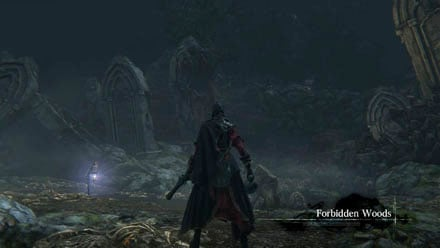
- Previous: Cathedral Ward
- Next: Byrgenwerth
- Suggested Level: 30 to 40
- Suggested Upgrade: +4 or +6
- Bosses: 1
- Lamps: 2
- Insight Gained: Talk to Master Willem (+2)
Forbidden Woods Map
{kind=link}
NPCs in the area
- Suspicious Beggar - This NPC waits atop the windmill amongst a pile of corpses. Can be directed towards Iosefka's Clinic or the Oedon Chapel.
- Valtr - This NPC is the leader of The League and is located in the hut that acts as a shortcut to the right of the first lamp ("Forbidden Woods" Lamp)
- Younger Madaras Twin - This NPC spawns near the first lamp after completing Valtr's questline (He drops the Madara's Whistle after death)
- Beast Patient Villager - This NPC can be found at the entrance of the route toward Iosefka's Clinic. She can be talked to at the red lanternon her house.
Bosses
Items
Weapons
- Cannon
- Molotov Cocktails x11
- Poison Knife x11
Consumables
- Twin Blood Stone Shard x25
- Thick Coldblood x5
- Madman's Knowledge x9
- Pebble x2
- Antidote x11
- Quicksilver Bullets x20
- Blood Vials x14
- Blood Beast Pellets x9
- Blue Elixir x4
- Pungent Cocktails x2 - From the Suspicious Beggar
- Shining Coins x11
Specials
- Deep Sea
- Clear Deep Sea
- Clockwise Metamorphosis
- Dissipating Lake
- White Church Set
- Beast Roar
- Tonsil stone - talk to the person in the house near the dogs.
- Graveguard Robe
- Graveguard Mask
- Graveguard Set
- Anti-Clockwise Metamorphosis rune
- Blood rapture - drop from Shadow of Yharnam.
- Frenzied Coldblood x4
- Madaras Whistle - drop from an enemy hunter
- Adept Blood Gemstone
- Murky Blood Gemstone
Enemies
- Rabid Dog
- Carrion Crow
- Hunstman (Torch & Axe, Torch & Shield, Sickle, Cleaver, Cutlass, pitchfork, Rifle, Rifle & Cutlass, Oil Urn, Molotov)
- Hunter (Appears after you have collected 1-5 Vermin as a The League co-operator. Added with the DLC)
- Large Huntsman
- Viper Pit Hatchling
- Greater Viper Pit
- Vermin Host
- Maneater Boar
- Rotted Corpse
- Abhorrent Beast
- Small Celestial Emissary
- Kidnapper
- Church Giant
- Hateful Maggot
Lore/Notes
Forbidden Woods Walkthrough
After defeating Vicar Amelia and inspecting the skull that opens a cut-scene, exit the church and go straight down all the stairs until you reach the big circular graveyard area with two sleeping Church Giants (alternatively, if you awaken at the Cathedral Ward lantern, exit to the left, turn right, and go up the stairs past the gate that requires the Hunter Chief Emblem). In the graveyard, go through the side entrance behind a sleeping Church Giant. Head left, then all the way down the stairs, past Alfred, where you will get to a locked door that requires a password that you received from inspecting the skull. That door will lead to the Forbidden Woods.
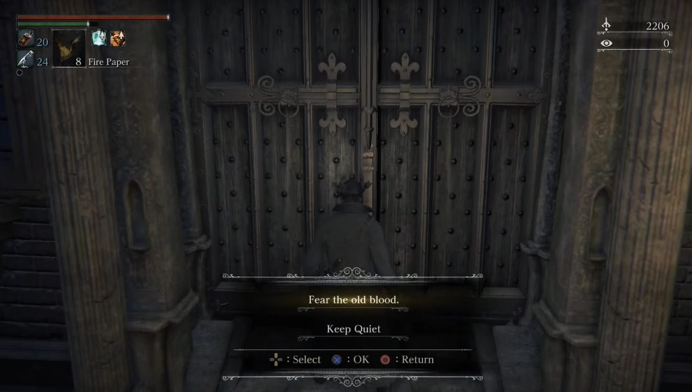
After entering the door with the password, talk to the person slouched on the chair to reveal that he is in fact dead, and collect a Madman's Knowledge. Head down the spiral stairs, through the exit to arrive at the Woods.
Into the Woods
Down another flight of stairs, on the right, behind a tree, find a Thick Coldblood(6). From here head down the left and follow the path until you come across a torch-wielding Huntsman, and his oil urn-tossing buddy. Take care of them and pick up 2x Pebble behind the Huntsman, and the Twin Blood Stone Shards on the right of the three way fork you just came down from. There's still a forward-right, and a left path to take, take the right first. Once you arrive at a bonfire, take another right to encounter an Executioner guarding a Madman's Knowledge and an Adept Blood Gemstone(2). Make your way back to the fork again, and this time take the left to finally arrive at the first lantern just before you arrive at the door.
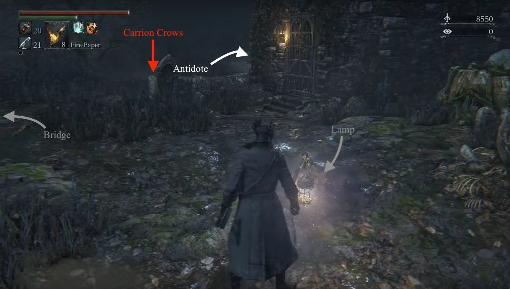
Before you proceed onto the bridge on the left, go around the left of the of the building to your right to claim 3x Antidote from a corpse but be careful as there are 2 Carrion Crows behind the tombstones right in front of you. On the stone bridge will be a torch wielding Huntsman and across it, a Rifle Huntsman. They're a little stronger in this area than they are in Central Yharnam but they shouldn't present much of a problem. Before you follow the path down, hang a left along the cliffside as behind some gravestones is a body holding Twin Blood Stone Shards.
Don't rush down the path, you need to be very careful in this area. If you look at the floor, you'll see a collection of planks piled up. This is a trap. If you walk on the planks a spiked log will swing from the tress above and take you out. This area is full of traps like this so pay attention to the floor as you go. Before you go past the trap, head left from the bridge to find Twin Blood Stone Shards. Once you've gone down the main road, there's a fork in the road. The path you need to follow is straight down the hill, but before you head there it's best to take the right fork and kill Large Huntsman as he could cause a headache in a few seconds.
Once the beast is down, head back to the fork and carry until you find a Thick Coldblood(6), and happen upon a collection of enemies around campfires. There are 4 Huntsman with various weapons, two oil urn throwing enemies, and two Rabid Dogs. Running into this group is a recipe for a quick death so instead, pull them one by one and take your time. If you're lucky, when you attract the attention of the Dogs their pathing will run them straight into the campfires and kill them pretty quickly. Once the group is down, mop up any items -this includes: 10x Quicksilver Bullets, Twin Blood Stone Shards, 2x Blood Vials- and press on forward past the fires.
You'll come to a three way fork now:
- Right- you'll find a Wandering Madness and a couple Carrion Crows. There is a possible skip (tested on latest patch) you can do to skip part of the level, up to the part with the cannon, or you can just head back then choose another fork. Jump towards the rocks where the birds and loot monsters are and you'll go out of bounds. Once the beast is dead, follow the path around and you'll spot an item up against some gravestones. Pick up the Madman's Knowledge then rejoin the path.
- Left- past the field of flowers, you'll come across a Large Huntsman walking out of a hut and if you go forward you'll fall down a trap into the upcoming village area. However you can still pick up 3x Blood Beast Pellets here.
- Straight into the small village you'll eventually come across another set of wooden planks on the floor, a trigger for another log to the face, so just go around it.
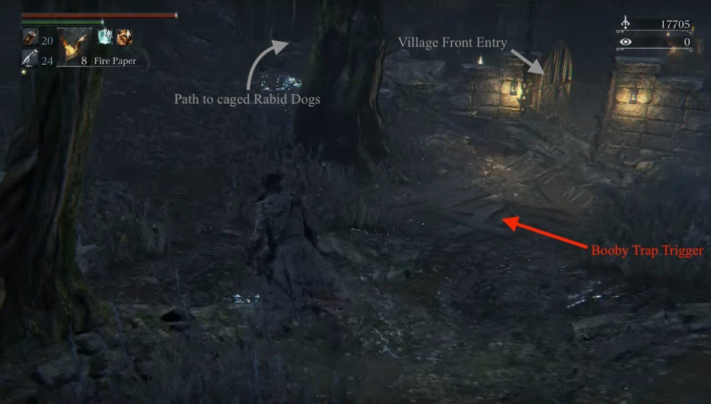
Detour
Before you head into the village, head uphill to the left. Here you can pick up you'll see an item (10x Quicksilver Bullets) ahead on the right, and a building on a slope. Head up the slope to find a bunch of Rabid Dogs in cages. Continue past the cages and you'll find a Carrion Crow guarding a ladder on your right. Head up to find another Carrion Crow, and the White Church Set. Head back down and continue in the direction you were going before you engaged the Crow at the bottom of the stairs, and you will encounter two more Rabid Dogs only this time, out of their cages. Continue forward and behind the little cottage ahead. You'll find a Snatcher and 6x Blood Vials. Find the entrance to this cottage to find a Beast Roar, and turn right at the exit to find another torch-wielding Huntsman. Continue into the gate he guarded and into the first door on the right to find 4x Blue Elixir.
Head back out of the gate and turn right into an open area where you can see another few Huntsmen on a wrecked wooden bridge. There's a left turn into a narrower wooden bridge with more Huntsmen, including two that toss Molotovs. Once you defeat the last Molotov tosser, drop down to the wooden ledge directly below where he was to collect 11x Molotov Cocktails. What you can do now is drop into the Crawling Corpse-infested mud water beneath.
Turn left when you drop, then right and around to find a metal gate at the end of a corridor with two pieces of loot -both Twin Blood Stone Shards. Open the gate to find yourself in the depths of the village. If you want to start where you would've done so, had you not gone up the hill, just hug the buildings on your left until you find the entrance that we were at.
Route to Iosefka's Clinic
Head back down the hill and when you get to the dog cages you'll see a path stray off, that you haven't accessed yet. Follow it and you'll head into a cave. As you drop in, behind you to your right is some Antidotes which you will definitely need. Follow the only path there is, down the hill and you'll come out to a large cavern, with shimmering water and three patrolling Reaper enemies. Littered throughout the room are various high stat Blood Gems so it's definitely worth exploring this area. However, as soon as you step in the water you'll start accruing Slow Poison so you'll have to be quick. There are several small islands in the water you can sprint to, but these leave you open to attack from the giants, so be careful, or simply sprint through and out the other side.
Once you're out of the water, you'll come to a ladder, climb it and you'll come back out in Yharnam, at another long ladder. Climb that you'll come out at a courtyard with a gate in front of you. Pull the lever and you'll have opened the locked gate next to the front entrance of the Clinic. Turn around there'll be another gate which will allow you to head to the rear entrance of the clinic.
The Village
From the entrance, here's the best order to clear out the area:
- The first house on the right, deal with the 2 Huntsmen inside to pick up 4x Pungent Blood Cocktails.
- Come back out of the house and kill the 3 Huntsmen hanging around the first house on the left.
- Press forward slightly and kill another 2 Huntsmen at the bonfire.
- Finally quickly rush the Large Huntsman a few meters away.
From the Large Huntsman, head forward and left, and take the first path made available. This will lead you to another house and another Huntsman to battle. Past this house is another, and in this one you can find 6x Blood Beast Pellets. Be very careful of the planked area in the middle of the village as this is a pit trap. If you watch where the enemies move as you get their attention you can see where to go safely. However, if you want an extra Antidote, you may trigger the trap on purpose and fight off a couple of Carrion Crows to claim it. Climb back up the ladder and continue forward-right.
In the water there are a load of the Crawling Corpses last seen in the aqueducts in Yharnam. These guys are stronger than the ones encountered earlier in the game. Up above on a gantry is another 2 Molotov-throwing enemies (unless you took the detour in which case, they are dealt with). Get his attention and when he starts throwing Molotovs he'll inadvertently clear a path for you. As he throws the Molotovs just sprint through and you'll come out next to a house.
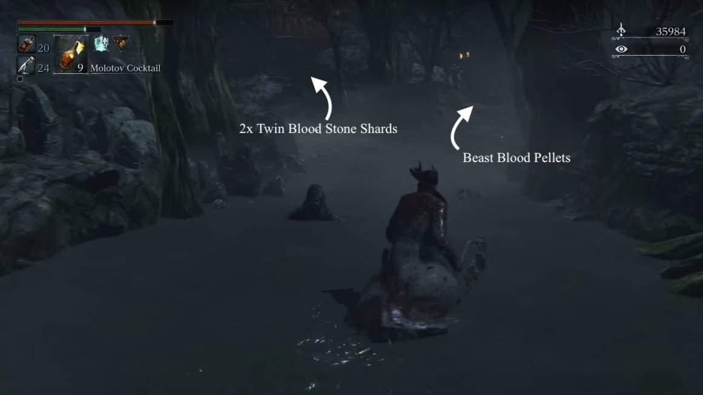
On the left, find a Large Huntsman facing away from you, and 2x Twin Blood Stone Shards. On the right, there's a hatchet Huntsman, and a plank shield Huntsman, as well as a Rifle Huntsman on a roof on the left. Dispatch them all. Before you progress, you'll notice a little path next to the water (to the right as you came in). Head down here for some items and unlock the shortcut door back to the village (if you didn't take the detour and do this already). Now in the likely event of a death in the next section, you can skip the water.
Head back to the house and you'll see a village street with a house at the end. DON'T rush down here. Walk slowly for a few paces and an enemy will start firing a cannon at you. A direct hit from the cannon ball will kill you instantly. There are two possible strategies here:
- Wait for a cannon ball to land, then sprint down to the cannon and take out the enemy operating it
- Go into the first house on the right of the street. Break all the boxes in here and there'll be a sneaky shortcut through the back of the houses that deposits you halfway down the street, allowing for a last mad dash to the cannon. After breaking the second set of boxes, you should find 6x Blood Vials.
Either way, once the cannon is silenced, there are a handful of enemies in the houses that can be mopped up. Particularly, heading towards the cannon, the last house on the left holds a Large Huntsman guarding 4x Beast Blood Pellets. Behind the cannon, you'll notice a mill building at the end of the street, walk around its right to find Twin Blood Stone Shards, then proceed into the mill and prepare to meet a brand new enemy.
When you walk into the mill you'll see a solitary enemy walking, down the stairs opposite you. You'd be forgiven for thinking this would be a quick kill, but it's not. When you get close to the enemy and you land a couple of strikes, he'll clutch his head in pain and several snake heads will sprout from his neck. You read that right. This is a Viper Pit Mob, and here are a few noteworthy things about him:
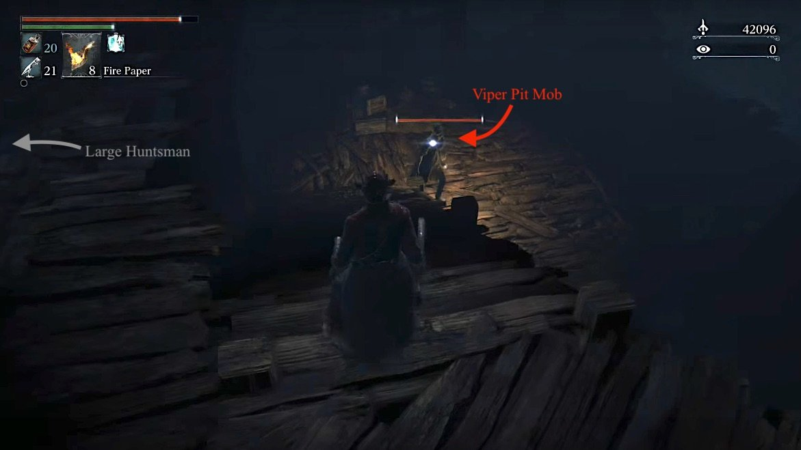
- This enemy can inflict Slow Poison and has a long range.
- The body has a surprisingly high physical defense, so you want to try and deal elemental damage.
- Fire and bolt both shave a lot of hit points off him.
- Be mindful whether the snakes or the body will attack (they attack independently and can attack at the same time for a near enough instant kill).
- Don't let the snakes grab you.
It's best to leave this enemy for now and to walk to the window, and drop down onto a wooden platform where you will find a Large Huntsman. Kill him then head up the ladder next to him. You'll end up in the room you were just in, only a lot higher up. Make your way to the item on the other side of the room (8x Poison Knife). Follow the wall until it dents into a hallway that leads to a roof. Here you can find another 3 Poison Knife at the end of the roof. On this same roof, you'll find the Suspicious Beggar; he'll seek refuge from you, my advice is to send him to Iosefka's Clinic. Giving him a location to go will grant you 2x Pungent Cocktails. Head back through the doorway and drop to the lower level. Head to the left, hugging the wall until you come to the next item; a very overpowered Cannon weapon that is very much worth getting. Drop down once again, navigating your way to the bottom. Now you may fight the Bloodborne Medusa.
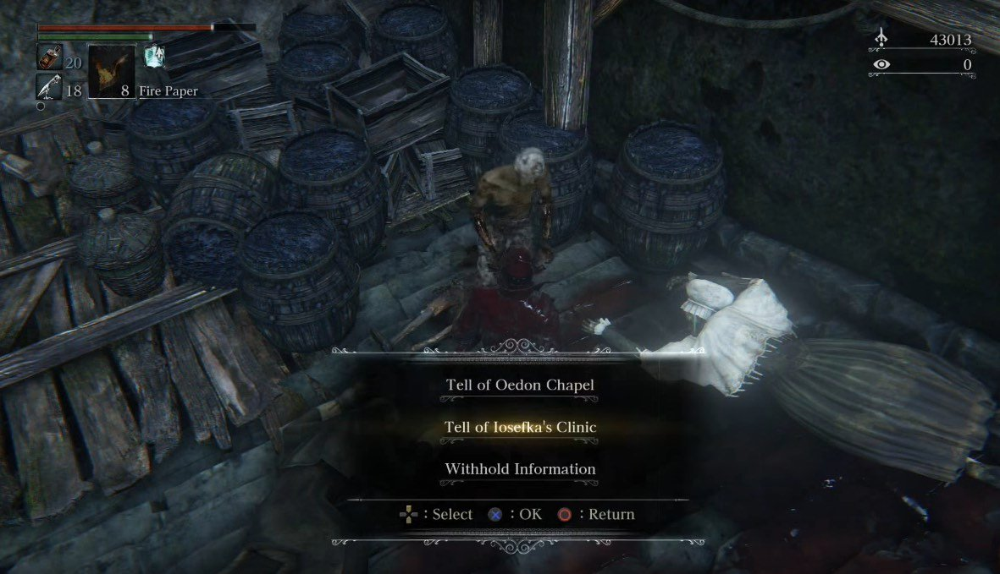
Once he is dead, pick up the Madman's Knowledge follow the only path back out of the room. This will take you onto a stone bridge and on the other side waits another Viper Pit Mob. Fortunately, this one is not as strong as the one you've just killed, but he is just as dangerous.
Walk to the Boss
When you return down from the lamp, you can ignore the Viper Pit Mob on the bridge, instead just carry on until you can climb the slope back in the direction you came to pick up a Twin Blood Stone Shards. From here, head back and turn right to find a an elevator. You can access this lift to reach an upper level. Continue out the gate to open a convenient shortcut back to the first lamp of the area. You can also find 4x Antidote between the lift, and this gate. Head back down the lift and continue down the slope, picking up a Frenzied Coldblood(7) as you go.
This next section is long, complicated and confusing. However to start off, there are three basic paths to take in order to obtain all items. There is a path on the left, you can pick up several goodies before doubling back up to this point. The right path will require you to go back up the slope one level then drop off onto the rock on the right side of the mountain, then jumping onto the next one to continue. If you're struggling to find the drop point, look for the lantern hooked onto the tree, you should be able to drop off just to the left of it.
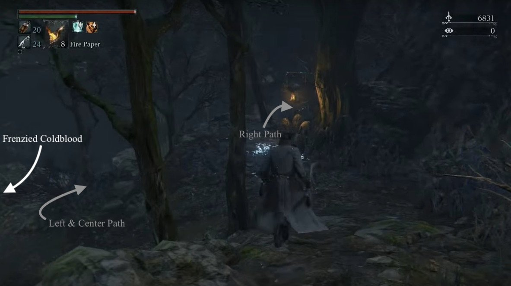
Left
This is a wooded area. You'll need to navigate around the trees to find 5 Viper Pit Hatchlings, and 2x Twin Blood Stone Shards, a Murky Blood Gemstone(3), Madman's Knowledge, in the first area. You may dent into the main path, then pop back up the left again. Doing this will lead you to a lone item: 2x Twin Blood Stone Shards. Head back and go down the center.
Center
If you go down the center stone path and stick to it without going off-course, you'll encounter 5x Shining Coins and a Mob along the way but eventually you'll arrive at an area swarmed with Hatchlings, a burning hoarse, and aGiant Viper Pit. Luckily for you, as soon as we see this, we're heading left and making a jump, to a separated part of the mountain. Here, traverse further and you'll find the Graveguard Mask. Drop down from here to get the rest of the Graveguard Set. Turn around and drop down behind the horizontal tree trunk, then continue up the hill in the same direction. There's Twin Blood Stone Shards behind a tree on the hill here. Continue until you've reached a lake then turn right and proceed to the top of the hill, taking on a Mob along the way. At the very top you'll find an elevator that takes you back up to the mill where you faced your first Mob.
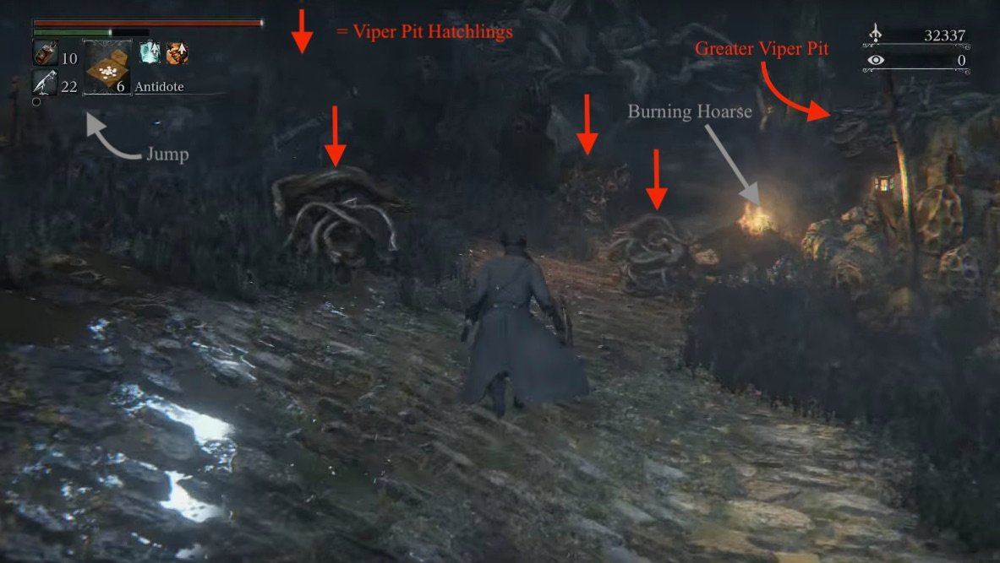
Head back down and straight across (or the left path when you originally came here). This dead end path holds worthwhile items, namely 3 Madman's Knowledge and the Anti-Clockwise Metamorphosis rune.Be careful as we've entered an area with another new enemy: Celestial Mob. They are quite weak, and very susceptible to bolt damage. Halfway down the path there will be a pair of Celestials which fire magic at you. The magic is slow but can be damaging, so dodge around it and kill them quickly. They are also capable of dropping some very decent loot, so look out for that.
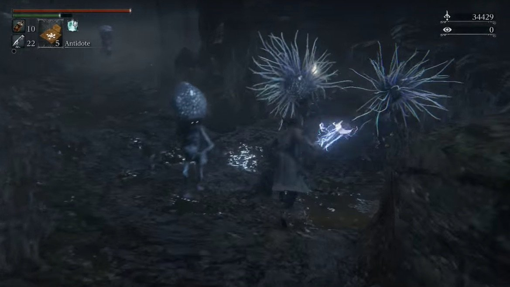
From here, you can go back to the lake and climb the hill in the direction you came from initially. Then do the same on the next lake, but instead of going up the hill, you follow the path next to the it. This will bring you to the lake with the Maneater Boars, and you can read of from 'Bay of Pigs'. However, I strongly recommend you use a Hunter's Mark and take the right path as seen below, to collect more of the goodies scattered around the map.
Right
After dropping, then jumping up, continue up the slope to find an Executioner guarding a 2x Twin Blood Stone Shards. From here, drop down and kill the Viper Pit Hatchling, pick up the Madman's Knowledge, then head to the right until you come across a cliff. What you want to do here is hug this cliff as much as possible, to the end; this ensures you see and pick up every item on the way, while having to deal with a few Viper Pit Hatchlings and Viper Pit Mobs. If you continue to hug the right side of this area, you'll eventually come across a Greater Viper Pit. This enemy looks like the Viper Pit Hatchling, except that it is 10x larger and is able to spit a poison projectile; be sure to check the building just behind it for an item.The other items you can pick up on this trail are as follows: Twin Blood Stone Shards, 2x Twin Blood Stone Shards, Twin Blood Stone Shards, Deep Sea Clear.
Once you're done here, head down the left, then down the slope again, following the same rule to keep a wall, or cliffside to your right as you go. You'll find 6x Shining Coins on the left, then a small alcove on the right, holding three Viper Pit Mobs and a Blood Stone Chunk. Continue forward but be prepared for a hell of a time. As you proceed, you'll find a den of Viper Pit Hatchlings and a Greater Viper Pit, on the right. As most strategies go, try and lure and pick them off, one at a time. Up the slope on the left, you'll find a Frenzied Coldblood(7). After you defeat the Giant Viper Pit, you can go around the tree and find a Frenzied Coldblood(8). If you thought the hell was over, it's only just begun. If you look towards the left, you should see an item glow in the mist. As you approach it you'll be hit with the realization of Bloodborne's cruel intention to make you fight two Greater Viper Pit but will reward you handsomely with 4x Twin Blood Stone Shards, Deep Sea, and the drops of each Viper. Since this is a narrow space, pulling one at a time will be no problem, however keep an eye on the poison projectiles from the Viper behind, as they can stun and poison you. Be sure to have an Antidote ready.
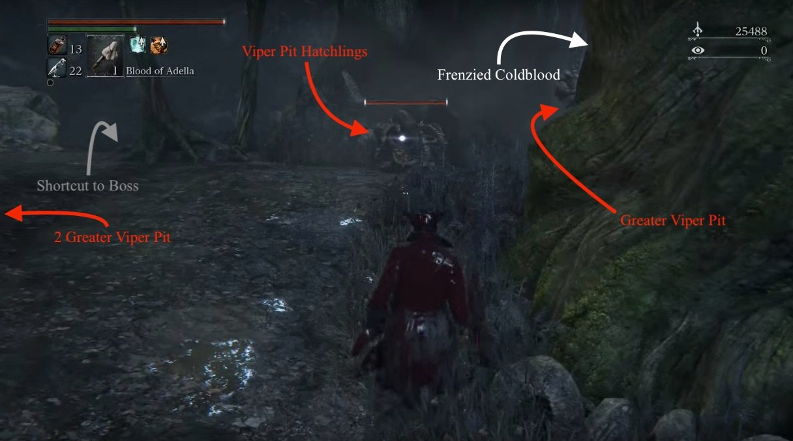
From where you killed the lone Greater Viper Pit, you can drop straight ahead to a land closer to the boss area. Here you'll encounter another Mob next to a bonfire and a Clockwise Metamorphosis on a body nearby. The gate you see down here won't open from this side so head left (facing the gate), and up the hill. If you drop down here, you'll land on a Greater Viper Pit. You can just run from it, and continue hugging the right side. Soon enough you'll pick up a Frenzied Coldblood (7). Eventually, you'll end up at a lake.
Bay of Pigs
The Maneater Boar should be at the other end of the pool (on the right if you've entered from the center), engrossed by something on the wall. As with all the other stationary pigs, quietly walk up behind him, hit a charge attack then a visceral hit to kill him quickly. He'll usually drop a Blood Vial or two. If you turn around here, you'll note the large roots covering another pool. In this pool and under the roots is another rune, Dissipating Lake, and a bunch of Wretched Undead but they shouldn't present too much of an issue, unless you let them gang up on you. Past the Boar, keep hugging the left to find a Sharp Blood Gemstone(3), and dry land with another Boar to deal with.
Defeat it, and continue through. You'll come across a split. If you head right, you can open up the gate that wouldn't open from where you dropped off if you took the Right route. You can now turn around and go in the other direction, you'll get to the boss area.
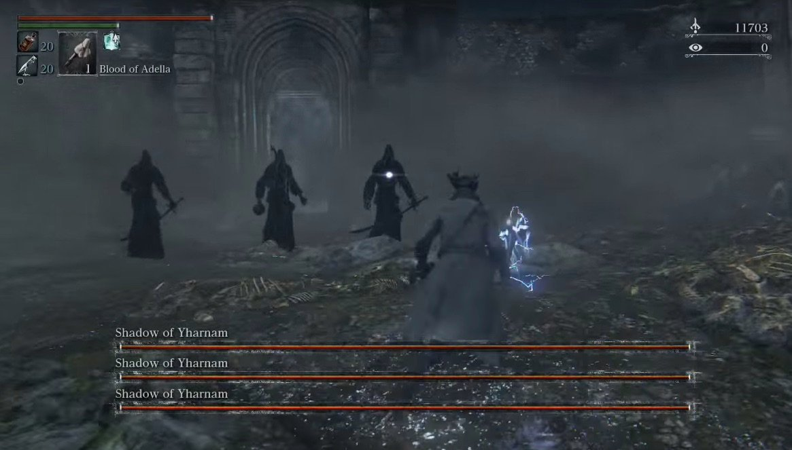
BOSS FIGHT: Shadow Of Yharnam
Once you've bested the area boss, the lamp will spawn and you are free to return to Hunter's Dream or carry on towards Byrgenwerth.
Forbidden Woods Map
 Anonymous
AnonymousKeep in mind that if you go to Iosefka's Clinic from here, all of the enemies in the woods will respawn. If you're used to other souls games, you might not expect that to occur. Considering how long it takes to clear the place and explore it, that would be pretty annoying if you didn't know it was going to happen. Hopefully this little tip helps you avoid losing progress.
- Anonymous
- Anonymous
Am I the only one who doesn't see this map as matching the in game location?
- Anonymous
Hello my name is Hidetaka Miyazaki and I would like to introduce you to my masterpiece, Poison Swamp #28
- Anonymous
I was getting chased by a hog right down to the Shadows of Yharnam archway on my first run, (correctly) thought it was a boss arena so dodged the piggy and ran back up the path.
Came back a few minutes later and triggered the boss and the fkn piggo was in the arena! Just standing off in one corner facing the wall stressing me out but never aggro’d.
Beat the Shadows, hit the lantern and then the pig came back to awareness and charged me!
Bailed out to the Dream and when I came back in he was gone.
- Anonymous
So theres a semi secret path that you can take if you are on the main section of path, right above the area with blue blobby dudes and where item 7 can be found, you can see a ledge jutting over blue dudes area that is suspiciously close to to yours. If you got the balls to jump, you can get to an area that is inbetween-ish item 7 and item 6. There you can locate the Graveguard Mask....completes the graveguard set....no mask is included where the item info says set is found, only 3 of 4...
- Anonymous
The map slightly threw me. There's a pig-icon just below the (8) that I mistook as a solid wall, to indicate that there was no passage between the areas above and below it.
- Anonymous
This wiki is just insane, i couldn't have survived this f**ken area without it.
- Anonymous
Over the years playing this game, I've gone from "where the hell is the boss" to "where the hell is the graveguard set"
- Anonymous
Not gonna mention the hateful maggots in the cave pool with the three reapers? That's a nasty *****ing surprise for someone thinking the islands are clear.
- Anonymous
Forest is Bloodborne's weakest area. In such an incredible game it's still good, but the confusing tangle on unremarkable paths winding around dozens of identical tombstones makes it the one area in the game where I still get lost. Finding the end is easy: head down. Finding all of the hidden paths? That takes some luck.
- Anonymous
- Anonymous
The guide needs some serious trimming. Removal of unnecessary text would help make this article much much more readable, otherwise I recommend people use another site for a guide, or a video guide. "These identical enemies are more dangerous than the ones previously encountered", "pay attention to the ground as there are many traps" (there are only two(?) ground-triggered traps in the whole area which have big indicators), and non-important reactions and commentary (exaggerating the size of the snake creatures, mentioning when a task isn't very difficult, "If you thought the hell was over, it's only just begun" ) are some examples of ways to reduce the length of the guide and showcase it in an easy to read way for people who need to continuously review steps. I'm unfortunately unable to edit the guide appropriately without access to the game, but if anyone who is familiar with the area and is able to understand my conjecture on how to make the guide "better", I and many many others coming to this page would absolutely appreciate it.
- Anonymous
- Anonymous
- Anonymous
- Anonymous
That is some THICC coldblood. And make that six THICC coldbloods.
- Anonymous
This guide is less help than the map. It's very poorly written with several errors. It's honestly more confusing to try and navigate the area with the guide than without. Some revision is highly recommended.
- Anonymous
This may sound dumb but some parts of this area kind of reminds me of the fishing hamlet.
- Anonymous
hey thanks for mentioning "DO NOT ENTER the Forbidden woods yet if you havent' fought Henryk with Eileen, or she'll vanish".... oh that's right. You didn't....
- Anonymous
This is the only location in bloodborne I used a guide. Really just wanted the map. Probably one of the most confusing bits of bloodborne for me.
- Anonymous
Not using this guide for enemy help or anything, just treasure, and it's bloody abysmal. I have to use the walkthrough in conjunction with the map and then piece together the best way forward collecting items on my own, trying to figure out what the guide is even talking about if I haven't done something already.
Lots of items not even mentioned in the main guide that are on the map. Things that are in the guide aren't on the map.
Poor form.
- Anonymous
It seems people play this game only with these walktroughs :D maybe too hard game then.
- Anonymous
So, not going to mention the fucking snake enemies lurking in the water on the way to Iosefka? There's a ton of them and they're really bothersome.
- Anonymous
- Anonymous
- Anonymous
It doesnt say what happena when you go into the clinic, if you go in far enough iosefka will go berserk and kill you, shes an impossible fight and she can one shot you, and heal when she gets to half health, which takes about 5 minutes
- Anonymous
"the moon doesn't turn red here, which must mean the developers got lazy"
The Paleblood Moon represents the interest of the Great Ones, and it's only visible in places that beckon it to descend. It appears in Yahar'gul and Yharnam because both the School of Mensis and the Healing Church want to draw it close, yet places like the Forbidden Woods, Old Yharnam, and Forsaken Castle Cainhurst still sit under a white moon because there's nothing there to attract the Great Ones. (The first place it appeared according to the lore was Old Yharnam on the first Night of the Hunt, when Old Yharnam was the center of the madness.)
- Anonymous
There is a mistake on the map. If you go to where the GraveYard set is in-game, and look at the cliff, you can see some loot. The cliff and loot do not appear on the map.
- Anonymous
- Anonymous
Pretty good farming spot (there's probably better, idk) if you run between boss bonfire and first bonfire using the shortcuts killing the pigs/snake dudes (9k souls in 2 min, + some vials)
- Anonymous
1 It might be a bug But I don't see the red moon and i don't hear mergo crying in this area 2. This is A REALLY GOOD Bloodecho farming spotJust going through the first part of the area (up to the first villiage where their's that huge hole in it) with just One of the moon ruins I can get around 30000 blood echos
- Anonymous
- Anonymous
so much backtracking to find a *****ing boss no wonder reviewers said it has terrible replayability
- Anonymous
So I read that if a player uses either one of the resonant bells for pvp or co-op, they essentially cannot continue because once they returned to their own world, the could not get a key item that it used to progress. My question is, what if the person who uses the resonant bell to be summoned already has the key item? Also would it affect the summoner the same way? Getting my ass handed to me in this area so was thinking to summon some randoms. Would hate it if the I caused the random i summoned to be unable to progress.
- Anonymous
The first elevator shortcut is bugged. Cant go down. Tried everything. Even circling to get it down again. Still nothing. The update didn't fix it either.
- Anonymous
the trap with the swinging log scared the crap out of me, it made a noise so i turned around saw nothing turned back to keep going to see a spikey log in my face
- Anonymous
what the ***** i died because of traps for future preferences i prefer you mark that down before someone else has an accident..
- Anonymous
The map is a bit hard to follow. I don't see the path to Isofka's clinic. Also, the elevator shortcut seems to be unmarked.
- Anonymous
I wish we could visit the Forbidden Woods before nightfall. Honestly I find this area to be rather dull since it all looks so identical. I know my way through it now but it just doesn't look that impressive. It reminds me somewhat of the Darkroot Garden in Dark Souls but just less interesting since the foliage doesn't attack you. To add to that, it doesn't change for some reason after the moon goes red. Why?
- Anonymous
- Anonymous
How do you even read that map? Ughh so confusing I'm lost in this area -.-
- Anonymous
I activated this lamp and went through the level.. opened the shortcut, go to the lamp and into the hunters dream to level up and save my points. Then i want go back to this lamp, but its not on the list!!! So i have to choose chathedral and go to this lamp by myself. But i cant activate it to spawn at this lamp. If i die, i start on the last lamp - and for me its central cathedral! Is this a bug or is there something special to do with this lamp? -- Please help!
- Anonymous
- Anonymous
There's a building near the first lamp in the area; it has a locked door just off to the side. Anyone know how to get through it? Doing a post-game wrap-up before I hit NG+ and I'd like to reach it.
- Anonymous
If there is a map of this area available anywhere, it is SORELY needed for this page. Forbidden woods are confusing as hell.
- Anonymous
What is that on the ledge above the graveguard set? (6 on the map) Can you make the jump from that log or is it accessible from somewhere else?
- Anonymous
The instructions on reaching the initial door into say that you go past Alfred, but I never saw him. In my game, he's still near the Old Yharnam Lamp. Is this just a mistake? I talked to him about the Church and Byrgenwerth before I fought Vicar Amelia.
- Anonymous
Suggestions: add The League leader to the map and main walkthrough, and creat a hyperlink to him.
- Anonymous
The first Viper Pit Mob can be easily dispatched before he even transform. While he walks down you just have to sneak behind him (walk slowly) and Charge Attack him => VA => Charge Attack => VA. Just try not to get him on the stairs as the difference in height might prevent the VA.
- Anonymous
After telling him where to take safe haven, kill him and he transforms into a large monster and if you kill him then he gives you the beast Relic.
- Anonymous
this is a question I've had for a long time lately I have been hearing a lot of people say this is the worst or most hated level in the game and the thing I don't understand is why personally I don't like the level either because I think it's to big and opened and a huge pain in the ass to get back to the boss after dying but if anyone has an answer to my question please feel free to tell me and praise the good blood
- 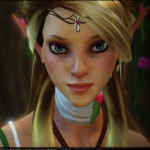Matroska
If you wait for him to walk down the stairs, he'll walk over to the wall and just stand there facing it. Now you can walk up behind him (walk, not run) and do a charged attack then visceral. Then time another charge for when he gets up and you'll get a second visceral opportunity which'll kill him.
- Anonymous
- 2 sets of Bloodbeast Pellets (4x and 6x I think) in the houses in front of the cannon - 1 Twin Blood Stone Shard on the ledge to the left after shortcut - The ledge for the Graveguard Hat
- Anonymous
u can get it at any window after opening the gates to the forbidden woods (or killing amelia - im not sure).
- Anonymous
so I've beaten the game twice now, and rather then continuing with another run, I'd rather help others that are having a hard time, i'm maxed lvl so you can add me "lionhart315" and i'll join you when ever.
What would hurt putting a bonfire near the shadows of yarnham, right in that place with the door locked? The run to bosses are the most unfun experiences in this game, wich they fixed in the dlcs
3
+11
-1